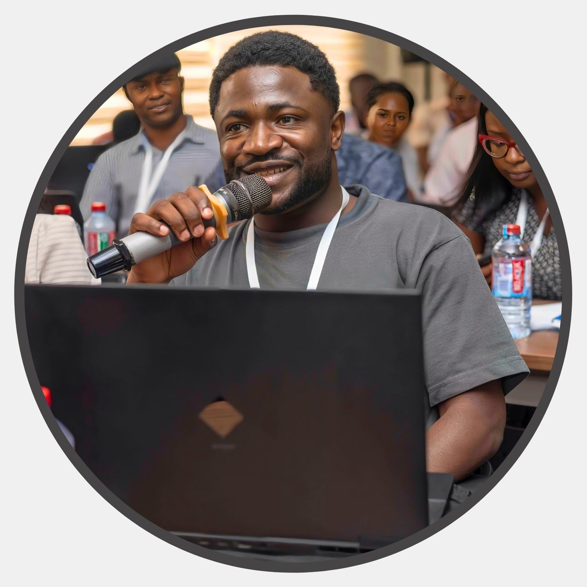

Chounna Yemele Gergino
Environmental Engineer and Researcher.
Address: Padova, Italy
Talks
-
2022 – Young Water expert representative at the Skat Foundation 20-year Anniversary, St Gallen, Switzerland.
-
2022 – UN Groundwater Summit 2022. UNESCO, Paris. As a young groundwater expert, I served as a moderator to a side-event on water supply in rural areas organised by the Rural Water Supply Network (RWSN). I also servd a junior rapporteur to a session on Groundwater management in Africa.
-
2022 – World Youth Forum 2021 Fellow: Participated as an attendee at the World Youth Forum 2021 in Sharm El Shiekh, Egypt held from the 10th to 13th January 2021. Participated as Group leader of the Corridor countries, during workshop discussions under the theme “Towards Rational Water Policies for Humanity”.
-
2022 – Environmental Engineering: Context, challenges, opportunities and professional Breakthrough. Environmental Engineering club-ENSTP-Yaoundé.
- 2022 – Plastic-Wastes-Water pollution Nexus in the context of Sustainable Development Goals: Case of Cameroon. World Earth Day 2022. Conference by Global Forum for Sustainable Rural Development.
- 2019 – Environmental Engineering and water crisis in developing world: Challenges and opportunities Environmental Engineering club-ENSTP-Yaoundé.